Ортодонтія · журнал «ДентАрт» 2019 №4
Лікування аномалії оклюзії класу III із застосуванням мікрогвинтів
TREATMENT OF SKELETAL CLASS III MALOCCLUSION USING MICROSCREWS IMPLANTS
Михайло Соломонюк,стоматологічна клініка «Excelline» (м. Київ, Україна)
У статті розглянуто клінічний випадок лікування пацієнта віком 30 років з мезіальною оклюзією зубних рядів. Цефалометричний аналіз показав структурний клас ІІІ, кут ANB -3°, нижньощелепний кут FMA був 29°. Нахил верхніх різців U1 до FH дорівнює 125°, IMPA відповідав 86°. Для корекції виявленої патології було запропоновано дистальне переміщення нижніх бічних зубів з опорою на мікрогвинти. Установили незнімну апаратуру «пропис MBT» з пазом (0,22) дюйма. Для дисталізації нижнього зубного ряду в міжкореневий простір між другими премолярами і першими молярами було встановлено 2 мікрогвинти 1,5 мм завтовшки, 7 мм довжиною. Дисталізація з мікрогвинтами відбитим анкоражем у пацієнта з класом III дала можливість встановити співвідношення між зубними рядами за класом I, скорегувати середню лінію і сагітальну сходинку між різцями, поліпшити положення підборіддя і лицевий профіль.
У 1899 році Енгль запропонував діагностувати аномалії оклюзії в сагітальній площині в залежності від співвідношення молярів на класи I, II, III. Клас III він визначив як порушення змикання перших молярів, при якому міжгорбикова фісура першого моляра нижньої щелепи розташовується попереду мезіально-щічного горбика першого моляра верхньої щелепи.1 Твід у 1946 році на підставі телерентгенографії (ТРГ) поділив клас III на дві форми: кісткову форму – збільшення нижньої або недорозвинутість верхньої щелепи – і псевдоклас III, де розміри щелеп відповідали середнім значенням, але при цьому спостерігалося зворотне змикання різців.2 Мойєрс, крім аналізу ТРГ, для диференціальної діагностики справжнього і псевдокласу III рекомендував визначати змикання зубних рядів у центральному співвідношенні, особливо у пацієнтів з нейром’язовими і функціональними порушеннями.3
Основна роль у виникненні аномалії оклюзії класу III належить генетичній схильності. Серед загальних і місцевих факторів найчастіше виявляються: ротовий тип дихання, неправильне положення і надмірні розміри язика в ротовій порожнині, нестирання горбиків тимчасових зубів, функціональні зміщення нижньої щелепи, травми щелепно-лицевої ділянки, утруднене носове дихання, постава, ендокринні порушення.4
Найбільша поширеність аномалії оклюзії класу III спостерігається в країнах Азії – до 26%. Це пояснюється морфологічними особливостями будови лицевого черепа, а саме зменшенням його передньої основи, зниженням гоніального кута, збільшенням задньої лицевої висоти і недорозвиненою верхньою щелепою. Передня ротація нижньої щелепи – необхідний компенсаторний механізм для змикання зубних рядів.5
Лікування класу III залежить від віку, ступеня тяжкості та типу росту лицевого скелета. У дорослих воно провадиться ортохірургічним втручанням і дентальною компенсацією скелетних невідповідностей, які називаються ортодонтичним камуфляжем.6 В його основі – дисталізація нижнього зубного ряду. Тривалий час для цієї мети використовували позаротову шийну тягу. Однак це вимагало відповідального її носіння не менше 12-14 годин на добу. Крім того, досить часто її використання викликало больовий симптом у зоні СНЩС, оскільки під дією сили тяги виросток придавлювався до задньої поверхні суглобової ямки.7 Як альтернативу їй, було запропоновано багато інтраоральних апаратів: Franzulum appliances, Lip Bumper, Jones jigs. Але більшість із них не отримали великого поширення, бо мають обмежений вплив на дисталізацію молярів, викликають переважно дистальний нахил і незначне корпусне переміщення, зміщення опори і протрузію передніх зубів.8
У нашій роботі ми пропонуємо покроковий спосіб дисталізації нижнього зубного ряду з опорою на мікрогвинти, використовуючи механіку ковзання.
Клінічний випадок
На консультацію в клініку звернувся 30-річний пацієнт зі скаргами на неправильне розташування зубів верхньої щелепи, некрасиву усмішку (фото 1). При зовнішньому огляді обличчя спостерігається зміщення підборіддя праворуч. Відкривання рота вільне, симптомів порушення з боку скронево-нижньощелепного суглоба не виявлено.
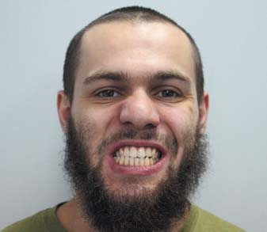
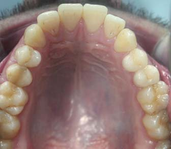
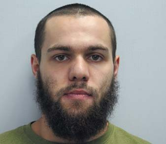
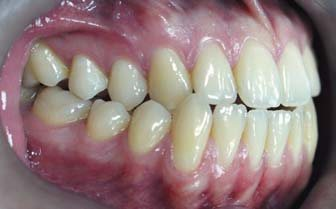
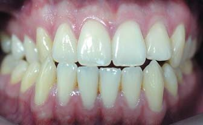
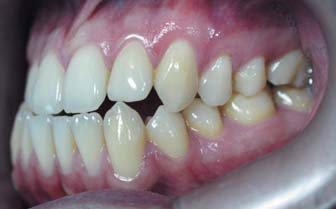
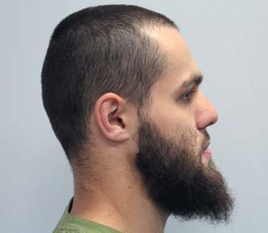
Профіль увігнутий, губи зімкнуті без напруги, дихання носове. Підбородна і носогубна складки середньої інтенсивності. Інтраоральне обстеження: слизова оболонка переддвер’я ротової порожнини в кольорі не змінена, глибина переддвер’я 5 мм, прикріплення вуздечки верхньої губи на відстані 4 мм від міжзубного сосочка, має достатню протяжність і не обмежує рухливість губи. Стан слизової оболонки в зоні щік, дна ротової порожнини, піднебіння, язика без видимих патологічних змін. Вуздечка язика має нормальне прикріплення, не обмежує його рухливість. На задній стінці глотки ділянок гіпертрофії і запального процесу не виявлено. Внутрішньоротовий огляд встановив дентальний клас III по молярах та іклах з обох боків. Зсув середньої лінії нижнього зубного ряду праворуч.
Розшифрування бічної телерентгенографії (ТРГ) до лікування виявило скелетний клас III – кут ANB -3°, кути SNA – 80°, SNB – 83°, нижньощелепний кут FMA (кут між франкфуртською і нижньощелепною площиною) 29° (табл. 1). Положення верхніх різців U1 до FH (кут, утворений віссю верхніх центральних різців U1 до франкфуртської горизонталі FH) дорівнює 125°. Відношення нижніх центральних різців – IMPA (кут між віссю нижніх центральних різців і нижньощелепною площиною) відповідає 86°. Кут нахилу оклюзійної площини до франкфуртської горизонталі (FH до Occ P) нижче середніх значень, дорівнював 6°. Симетричне положення передньої лицевої висоти по відношенню до задньої – індекс PFH/AFH – становив 0,6 (фото 4).
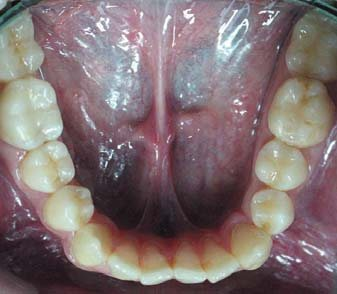
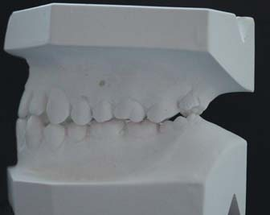
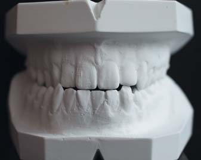
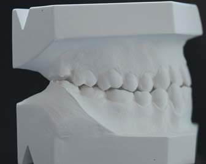
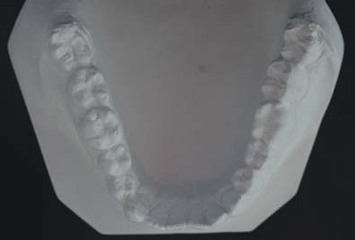
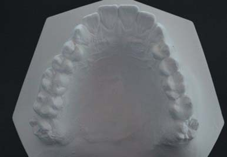
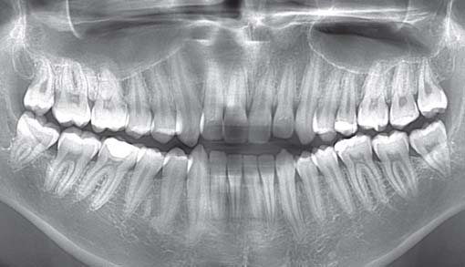
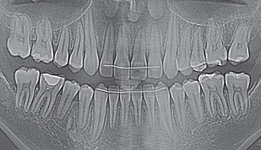
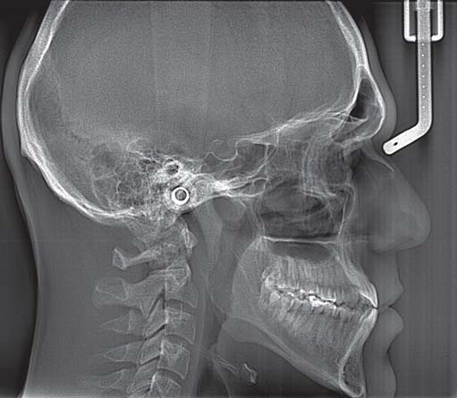
На підставі цих клінічних обстежень, антропометричного дослідження моделей щелеп, використання додаткових спеціальних методів дослідження, ТРГ у прямій і бічній проекції, ортопантомографії було встановлено діагноз: макрогнатія і прогнатія нижньої щелепи, мезіальна оклюзія, ускладнена перехресною оклюзією бічних зубів, зміщення середньої лінії (Класифікація ВООЗ).
Лікувальні етапи, потрібні для корекції виявленої патології:
- вирівнювання зубних дуг;
- дисталізація нижнього зубного ряду;
- встановлення співвідношення за класом I, досягнувши функціональної оклюзії;
- нормалізація сагітальної сходинки між верхніми і нижніми різцями;
- поліпшення лицевого профілю.
| Цефалометричні кути (°) | Середні значення | До лікування | Після лікування |
|---|---|---|---|
| SNA | 82 | 80 | 81 |
| SNB | 80 | 83 | 83 |
| ANB | 2 | 3 | 2 |
| FMA | 25 | 29 | 28 |
| PFH/AFH | 0,8 | 0,6 | 0,7 |
| FH к Occ P | 10 | 6 | 2 |
| Ui к FH | 114 | 125 | 124 |
| IMPA | 90 | 86 | 78 |
| Z-angle | 75 | 94 | 93 |
Для вирішення визначених завдань було запропоновано кілька варіантів. Перший передбачав ортохірургічне лікування. Від оперативних втручань пацієнт категорично відмовився. Другий альтернативний лікувальний план – дисталізація бічних зубів з опорою на мікрогвинти. Пацієнт обрав цей варіант лікування.
Була встановлена незнімна апаратура «пропис MBT» з пазом (0,22) дюйма і фіксованою первинною нікель-титановою (Ni-TI) дугою розміром 0,14 дюйма, потім 0,16 і 0,16-0,25 дюйма. Після вирівнювання зубних дуг була встановлена сталева дуга 0,19-0,25 дюйма на брекети верхнього і нижнього зубного ряду. Для створення абсолютної опори у міжкореневий простір між другими премолярами і першими молярами на нижній щелепі були встановлені 2 мікрогвинти (товщиною 1,5 мм і довжиною 7 мм). На нижній сталевій дузі між латеральними різцями та іклами напаяно гачки. Для дисталізації нижніх бічних зубів встановлено розкриваючі нітінолові пружини на дугу між брекетами других премолярів і перших молярів. Під час кожного візиту пацієнта робили активацію розкриваючої пружини шляхом її подовження на ширину брекета премоляра. Щоб запобігти протрузивній дії розкриваючої пружини на фронтальні зуби, від головки мікрогвинта до напаяних гачків на дузі були фіксовані на обидва боки закриваючі нітінолові пружини силою 150 мг кожна (фото 5).
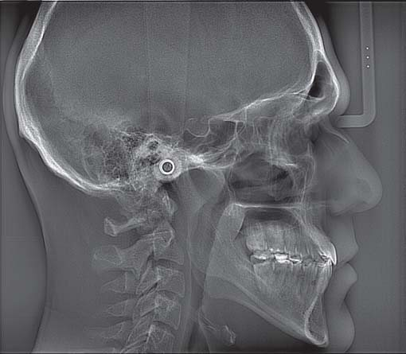
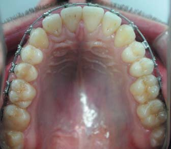
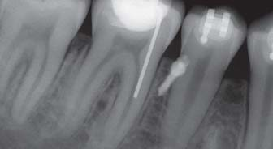
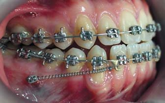
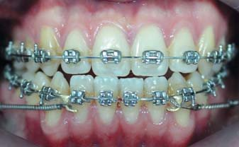

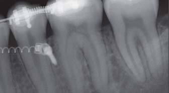
Дисталізація молярів закінчена після досягнення їх змикання за I класом Енгля, після чого мікрогвинти були вилучені. Вигинами другого порядку нижні моляри нахилені дистально.
Переміщення премолярів у дисталізуючий простір робили за допомогою розкриваючих нітінолових пружин, встановлених між брекетами цих та сусідніх зубів з кожного боку. Фіксували еластичні тяги (3/16 heavy) від верхніх других молярів до припаяних гачків на нижній дузі. Після переміщення премолярів за ними дуга була роз’єднана, моляри і премоляри пов’язані восьмиподібними лігатурами. Мікрогвинти між ними були встановлені повторно, після чого закриваючими нітіноловими пружинами силою 250 мг робили ретракцію іклів і нижніх різців.
Результати лікування
Незнімну апаратуру зняли через 24 місяці після початку лікування. Аналіз фотографій обличчя виявив помітне поліпшення лицевого профілю. На інтраоральних фотографіях зубні дуги вирівняні (фото 6).
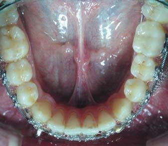
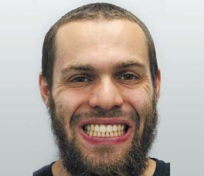
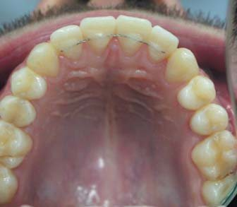
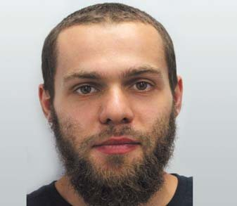
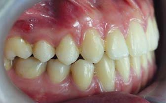
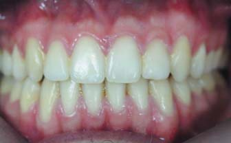
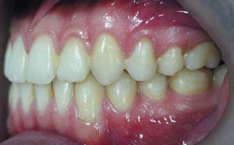
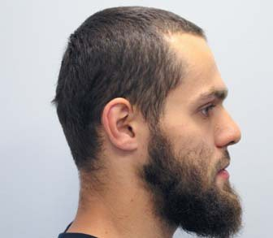
Аналіз моделей показав середні значення сагітального і вертикального співвідношення різців. Співвідношення зубних рядів було класу І за Енглем, співпадіння середньої лінії на верхньому і нижньому зубному ряду. При діагностиці в артикуляторі у стані спокою виявлені щільний міжгорбиковий контакт між зубними рядами, відсутність передчасних контактів при бічних рухах нижньої щелепи, фронтальна спрямовуюча та іклове ведення з обох боків (фото 7).
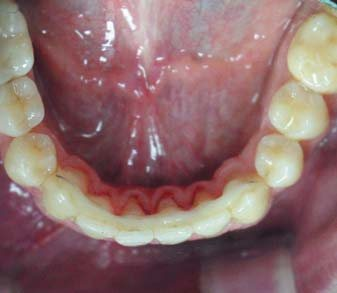
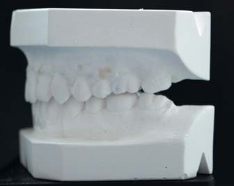
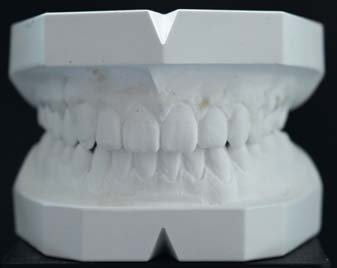
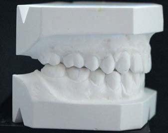
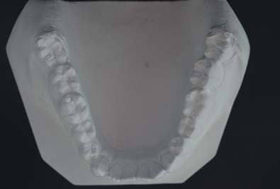
Цефалометричний аналіз засвідчив зниження нахилу оклюзійної площини, зменшення нахилу нижніх різців, незначне зменшення кута FMA. При накладенні цефалометричних обрисовок до і після лікування відзначається корпусна дисталізація нижніх бічних зубів близько 4 мм. На ортопантомограмі корені зубів паралельні, відсутня їх резорбція. Мікрогвинти забезпечували повноцінний анкораж при дисталізації, симптомів їх рухливості чи втрати у процесі лікування не спостерігалося.
Через 1 рік ретенції під час клінічного огляду був відсутній рецидив, спостерігалася стабільність раніше отриманих результатів. Співвідношення по іклах і молярах було I класу (фото 8).
Відсутність скупченості зубів у фронтальній ділянці на верхньому і нижньому зубному ряду. Зубні дуги мають правильну форму, в нормі сагітальне і вертикальне співвідношення різців. Немає симптомів дисфункції з боку СНЩС.
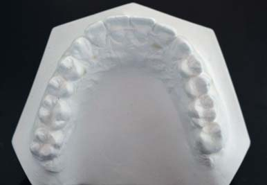
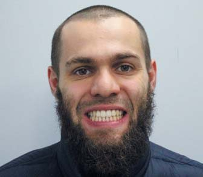
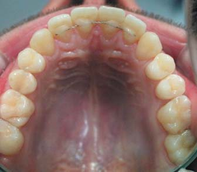
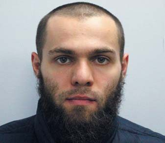
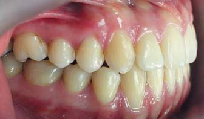
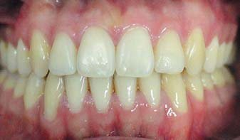
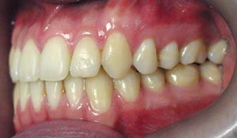
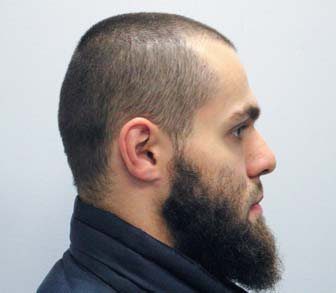
Аналіз і обговорення
Нині скелетні порушення класу III у дорослих досить успішно усуваються за допомогою поєднаного підходу – ортодонтичної підготовки та хірургічної корекції. Це дає можливість створити гармонійний лицевий профіль, встановити функціональні оклюзійні контакти між зубними рядами. Однак багато пацієнтів, задоволених своїм зовнішнім виглядом, відмовляються від хірургічного втручання. У таких випадках лікування провадиться без корекції скелетної дисгармонії і спрямоване на усунення дентальних невідповідностей між зубними рядами змиканням молярів та іклів за I класом. Важливим фактором для успішного лікування цієї аномалії оклюзії є тип лицевого скелета. У пацієнтів з брахіоцефалічним типом рух зубів у сагітальній і трансверзальній площині ротує нижню щелепу вниз і назад, тим самим коригуючи зворотне змикання різців і поліпшуючи естетику обличчя. Доліхоцефалічний тип, навпаки, проявляється збільшенням нижньої третини обличчя. Подібні переміщення зубів у таких пацієнтів обертають нижню щелепу, підвищуючи вертикальний розмір обличчя. Клінічно це може виявлятися незмиканням губ у спокої, погіршенням профілю. Хірургічний метод може бути кращим при лікуванні цієї групи.
У таких випадках Dr. Kim (1975 г.) запропонував техніку багатопетльової дуги (БПД). В її основі – ряд L-подібних петель з вигинами другого порядку, що виконують переміщення зубів переважно у вертикальному напрямку. Контроль цих вертикальних рухів може бути індивідуальним як на певні зуби, так і на групи зубів. Безпосередня сила для цих рухів транслюється від носіння коротких еластиків за III класом. Механізм дії цієї комбінації реконструює оклюзійну площину з нахилом та інтрузією задніх зубів і екструзією нижніх різців. При цьому ротація оклюзійної площини відбувається проти годинникової стрілки, але без ефекту нахилу нижньої щелепи вниз і назад. Таким чином, нижній зубний ряд може бути нахилений дистально комбінацією БПД і міжщелепних еластиків. Однак якщо пацієнт відмовляється від постійного носіння еластиків при використанні БПД, ситуація буде погіршуватися. Ця техніка особливо ефективна у пацієнтів зі збільшеною нижньою висотою обличчя і відкритим прикусом, де значна мезіальна ангуляція бічних зубів. Абсолютна їх паралельність на ортопантомограмі (ОПТГ) буде протипоказанням до застосування БПД.
Сьогодні стоматологи рідко застосовують видалення нижніх зубів для корекції класу III. В особливих випадках значної скупченості у фронтальній ділянці може бути рекомендована екстракція перших премолярів або центральних різців. Ряд дослідників запропонували видаляти другі моляри замість третіх – за умови гарного розвитку їх коронки і кореня. Проведені дослідження підтверджують сприятливе прорізування третіх молярів після видалення других у 96% пацієнтів. Перевагою цього методу є достатня кількість простору і легша дисталізація 12, ніж 14 зубів. Дослідження Якобс засвідчили незначний нахил і корпусну ретракцію нижніх центральних різців після видалення других молярів.9 На противагу цьому, після видалення премолярів корекція зворотної сагітальної сходинки відбувається переважно за рахунок їх ретракції з лінгвальним нахилом. Для профілактики екструзії верхніх других молярів до прорізування нижніх третіх рекомендоване використання знімного ретейнера. Недостатнє формування, значний мезіальний нахил зубів мудрості буде поганим прогнозом для їх нормального прорізування.
З появою скелетних анкоражних систем зменшилася необхідність видалення зубів і ортохірургічних втручань. Застосування мікрогвинтів – гарна альтернатива позаротовій тязі та еластикам. Не потрібне відповідальне носіння еластиків, проста методика їх установки, механіка лікування обмежує потребу в значних згинаннях дуг.
Для дистального переміщення нижнього зубного ряду мікрогвинти можуть бути встановлені в ретромолярну зону, щічний гребінь або міжкореневий простір. Вектор сили, спрямований від ретромолярної зони, найсприятливіший для дистального переміщення нижнього зубного ряду. Сила тяги спрямована паралельно оклюзійній площині, сприяє корпусному переміщенню молярів. Однак мініпластинами чи мікрогвинтами, встановленими в цій зоні, складно за необхідності інтрузувати бічні зуби і ротувати нижньощелепну та оклюзійну площини. Постійна іритація слизової оболонки мікрогвинтом і закриваючою пружиною може створювати дискомфорт і запалення. Мініпластини демонструють вищу силу, потрібну для дисталізації всього зубного ряду, ніж мікрогвинти. Однак необхідність хірургічних процедур, триваліше їх встановлення, повторне втручання для вилучення обмежують їх застосування у повсякденній практиці лікаря-ортодонта.
Латеральна тяга на мікрогвинтах, встановлених у щічний кістковий виступ (Buccal Shelf) на нижній щелепі, досить часто використовується для дисталізації. Мікрогвинти, вкручені в цю зону, мають високий коефіцієнт стабільності (понад 85%) протягом усього періоду лікування. Однак латеральна тяга від мікрогвинтів до гачків на дузі проходить нижче центру опору всього зубного ряду. Це може призводити до ротації оклюзійної площини, подовження нижньої третини обличчя, збільшення міжіклової відстані, що може впливати на стабільність отриманого результату.
Дисталізація на мікрогвинтах, встановлених у міжкореневий простір, застосовується досить тривалий час. Достатній об’єм і якість кортикальної кістки, значна відстань між коренями зубів, зручність для роботи роблять встановлення мікрогвинтів у цій зоні найбільш доцільним. Найчастіше їх встановлюють між першими молярами і другими премолярами, а також другими і першими молярами. При всьому цьому, традиційним способом дисталізувати нижній зубний ряд складно більш ніж на 2-3 мм, оскільки простір обмежений коренями і потрібне їх перевстановлення. Крім того, для дисталізації всього зубного ряду слід докласти значну силу, внаслідок чого часто спостерігається втрата стабільності мікрогвинтів.
З огляду на всі перераховані труднощі топографії місць встановлення і способу пересування, ми пропонуємо метод групової дисталізації з опорою на мікрогвинти в міжкореневому просторі відбитим анкоражем. Ця техніка має максимум механічних переваг у порівнянні з іншими. Спосіб активації системи простий. Сила докладання постійно контрольована (зменшується після дистального переміщення), не спрямована безпосередньо на мікрогвинт, а діє опосередковано внаслідок розкриття пружини. Це не робить надмірного впливу на стійкість мікрогвинта в кістці. Повторне встановлення мікрогвинтів триває не більше 1 хв на кожному боці. Усі переміщення відбуваються на сталевій дузі з прямокутним перетином 0,019 х 0,025 дюйма механікою ковзання. Між дугою і пазом брекета існує зазор близько 10°. Це забезпечує гарний контроль ангуляції зубів у процесі дистального переміщення молярів, премолярів та іклів з мінімальним нахилом коронки і кореня.
Після дисталізації моляри були інтрузовані з нахилом за допомогою вигинів на дузі другого порядку. Це сприяло підтриманню висоти обличчя і профілактиці повернення після їх дистального переміщення. У процесі життєдіяльності під дією функції жувального апарату відбувається їх вирівнювання без рецидиву. Важливим моментом при лікуванні аномалії оклюзії класу III є зміна нахилу оклюзійної площини проти годинникової стрілки. У нашого пацієнта франкфурська площина до оклюзійної площини помітно знизилася, в той же час FMA, або нижньощелепна площина, практично не змінилася. Ці показники демонструють, що реконструювати оклюзійну площину з нахилом та інтрузією бічних зубів і екструзією нижніх різців можна не лише з БПД, але також і з застосуванням мікрогвинтів, оскільки напрямок ретракційної сили від мікрогвинтів до гачків на дузі проходив трохи вище центру опору нижнього зубного ряду.
Слід брати до уваги, особливо при камуфляжному лікуванні класу III, що в зоні різців нижньої щелепи є обмеження для величини ретракції, оскільки може статися вихід коренів з альвеолярної кістки. Це може призводити до втрати цілісності і підтримки з боку кісткових структур. Усі переміщення можуть бути виконані лише за наявності альвеолярної кістки. За межами кісткової тканини зуби і зубні ряди не переміщуються навіть за наявності стабільної опори. Можливість усіх пересувань, якість і обсяг кістки слід оцінити під час планування з урахуванням даних 3D комп’ютерної томографії.
Таким чином, дисталізація з мікрогвинтами відбитим анкоражем у пацієнта з аномалією оклюзії класу III дала можливість встановити співвідношення між зубними рядами за класом I, скорегувати середню лінію і сагітальну сходинку між різцями, поліпшити положення підборіддя і лицевий профіль.
Висновки
- Тяжкі скелетні порушення оклюзії класу III усуваються ортохірургічним лікуванням.
- У пацієнтів із середнім ступенем тяжкості, які відмовляються від хірургічного втручання, можливе проведення камуфляж-терапії методом дисталізації.
- Для дисталізації мікрогвинти найліпше встановлювати між першими молярами і другими премолярами. Відстань між коренями і товщина кортикальної кістки сприяють їх стабільності протягом усього періоду лікування.
- Дисталізація із застосуванням мікрогвинтів механікою ковзання забезпечує гарний контроль ангуляції зубів у процесі дистального переміщення з мінімальним нахилом коронки і кореня.
- Напрямок ретракційної сили вище центру опору нижнього зубного ряду дає можливість реконструювати оклюзійну площину з нахилом та інтрузією бічних зубів і екструзією нижніх різців.
Література
- Park J., Baik S. Classification of Angle Class III malocclusion and its treatment modalities // Int J Adult Orthodon Orthognath Surg. – 2000. – Vol. 16. – P. 19-29.
- Lima C. E. Directional force treatment for an adult with Class III malocclusion and open bite // Am J Orthod Dentofacial Orthop. – 2006. – Vol. 129. – P. 817-824.
- Jacobson A, Evans W, Preston C, Sadowsky P. Mandibular prognathism // Am J Orthod. – 1974. – Vol. 66. – P. 140-171.
- Ngan P., Moon W. Evolution of Class III treatment in orthodontics // Am J Orthod. Dentofacial Orthop. – 2015. – Vol. 148. – P. 22-36.
- Chew M.T. Soft and hard tissue changes after bimaxillary surgery in Chinese Class III patients // Angle Orthod. – 2005. – Vol. 75. – P. 959-63.
- Janson G., de Souza J. E., Alves A. F., Andrade P. Jr, Nakamura A., Freitas M. R., et al. Extreme dentoalveolar compensation in the treatment of Class III malocclusion // Am J Orthod Dentofacial Orthop. – 2005. – Vol. 128. – P. 787-794.
- Ellis E., McNamara J. A. Components of adult Class III open bite malocclusion // J Oral Maxillofac Sung. – 1984. – Vol. 42. – P. 295-305.
- Proffit W. R., Fields H. W., Sarver D. M. Contemporary orthodonnics. 4th ed. St Lous: Mosby – Elsevier. – 2007. – P. 383-385.
- Jacobs C., Jacobs-Muller C., Hoffman V., Meila D., Erbe C., Krieger E., et al. Dental compensation for moderate Class with vertical growth pattern by extraction of the lower second molars // J Orofac Orthop. – 2012. – Vol. 73. – P. 41-48.